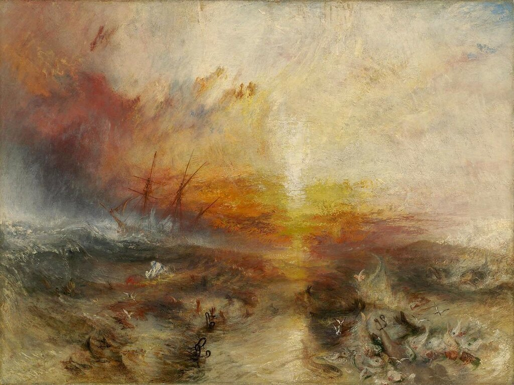
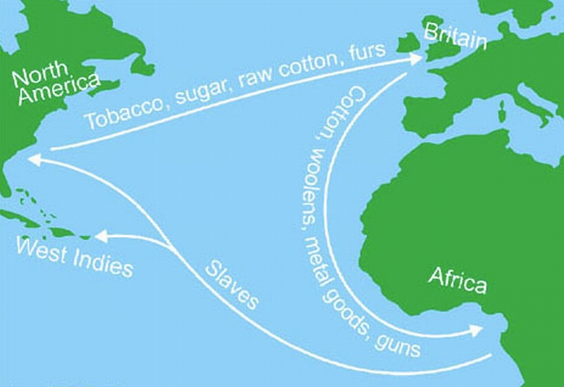
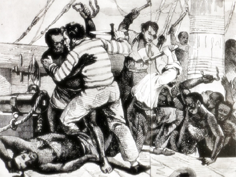
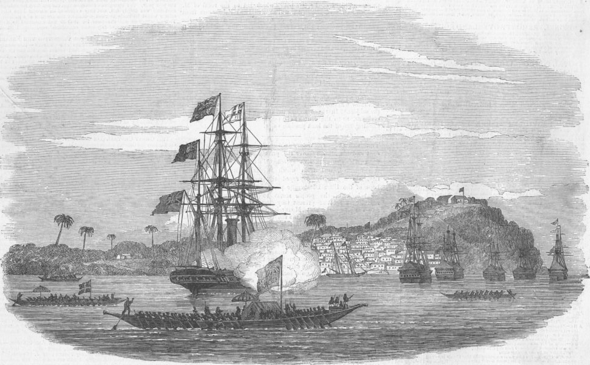

Хочу вынести обозначенную в заголовке тему в отдельный рассказ, так как это поможет разъяснить некоторые особенности службы моряков, вовлеченных в сферу работорговли, а заодно даст ответ на вопросы, поставленные в комментариях к предыдущему посту.
Даже по понятиям того жестокого времени, когда процветала работорговля, и когда пиратские захваты купеческих судов в море были явлением вполне обычным, морская служба на невольничьих судах считалась очень опасной. Опасной как для вложенного в этот вид морской торговли капитала, так и для жизни моряков.

Уильям Тёрнер . Невольничий корабль – Шторм приближается. (1840) Museum of Fine Arts, Boston
Традиционно считается, что самым убыточным для работорговцев являлся так называемый «срединный переход» (the middle passage) в «треугольнике работорговли»: от берегов Африки с грузом рабов к берегам Америки.

Треугольник работорговли. Вся экспедиция невольничьего судна делилась традиционно на три этапа. Первый этап – перемещение товаров из Европы в Африку (ткани, спирт, табачные изделия, бижутерия, металлоизделия, оружие). Товары обменивались на африканских рабов. Второй этап – доставка рабов в Америку.Третий этап - возвращение кораблей в Европу с продуктами рабского труда на плантациях: сахар, табак, ром, хлопок-сырец и т.п.
Однако это не совсем так. Опасности подстерегали моряков на всех этапах маршрута. Мы можем это подтвердить, основываясь на результатах исследования Йозефа Иникори, которое охватывает период от 1689 по 1807 год. За этот период имеется информация о 1053 английских невольничьих судах, потерянных по различным причинам. Из них 679 кораблей, или 64,5 %, были захвачены противником в ходе многочисленных войн той эпохи. 188 кораблей, или 17,9 % потерпели кораблекрушение на различных этапах маршрута, не включающих побережье Западной Африки. И, наконец, 186 кораблей, или 17,7 % были потеряны в результате бунта рабов, конфликтов с прибрежным африканским населением и крушений у берегов Африки.
Таким образом, основная часть потерянных невольничьих судов приходится на период боевых действий между странами, стремящимися завоевать господство на море в этой части мирового океана.
Когда начинались войны, количество выданных патентов частным лицам (приватирам) на ведение военных операций против торговых судов вражеских стран многократоно увеличивалось. Многие суда крупных работорговцев, особенно базировавшиеся в Ливерпуле, в военное время совмещали работорговлю с приватирством.
Мы уже говорили об англо-голландских войнах семнадцатого века. Но и в последующий период произошло как минимум семь крупных войн, в той или иной степени затрагивающих зону действий невольничьих судов. Однако самыми крупными, несомненно, стали войны периода Французской революции и Наполеона (1793-1815). Из общего количества захваченных в войнах кораблей (679) на этот период приходится около одной трети (248).
Конечно же, захват невольничьего судна с живым товаром мог стать хорошим призом, особенно для приватиров, которые должны были возмещать большие расходы, понесенные на приобретение патента. Поэтому большая часть из захваченных кораблей шла на перепродажу. Но были и другие примеры. В публикации компании Ллойда (Lloyd's List) от 23 июня 1747 года мы читаем:
Корабль Ogden, из Ливерпуля, на маршруте из Африки на Ямайку, имея на борту 370 негров, был атакован испанским приватиром. Испанцы были так раздражены полученным отпором, что, после захвата, перебили всех, белых и черных, без разбора. Вскоре Ogden затонул. Спастись удалось лишь одному моряку, 5 юнгам и 3 неграм.
Аналогичный случай произошел в 1760 году:
Корабль-склад из Кейп-Коста (Гана – g._g.) с 130 рабами, экипаж которого состоял из 23 человек, встретился с двумя или тремя французскими приватирами. Экипаж оказывал сопротивление в течение двух суток, но в конце концов был захвачен. В отместку за упорное сопротивление членам экипажа отрезали головы самым варварским способом.
И все же такие случаи были скорее исключением, чем правилом. Обычно живой товар, а иногда и членов экипажа, перепродавали. Так что эта категория потерь невольничьих судов была не самая страшная для жизни моряков угроза. Значительно больше их гибло в результате кораблекрушений и восстания рабов на невольничьих судах. С кораблекрушениями, в целом, более или менее понятно, последнюю же угрозу мы рассмотрим болеее подробно.
Сведения об обстоятельствах бунтов рабов на корабле сохранились, естественно, в основном в тех случаях, когда остались выжившие члены экипажа, или когда корабль был уничтожен во время стоянки у берега.

Живописную картину мятежей рабов на невольничьих кораблях можно найти в книге Джорджа Ф.Доу «История работорговли. Странствия невольничьих кораблей в Атлантике», которая переведена на русский (2013). По-моему, она есть в сети. Я приведу здесь несколько примеров из других источников.
1741 – Lambert (порт приписки – Ливерпуль, капитан - Rathbone)
Разрушен во время стоянки у берега. Все члены экипажа, кроме одного, были убиты.
1750 – King David (Ливерпуль, Holland)
Негры подняли мятеж на переходе, во время стоянки у группы островов.Капитан и все члены экипажа, за исключением четверых матросов, были убиты. Выжившим удалось довести корабль до Гваделупы.
1750 – Earl of Radnor (Бристоль, Williams)
Взбунтовавшиеся рабы захватили корабль, вытащили его на берег у нигерийского порта Калабар и сожгли.

Побережье Нигерии у порта Калабар, XIX век
1751 – Willingmind (Бристоль, Appleton)
Корабль сожжен местными аборигенами в устье реки Шербро в Сьерра-Леоне. Капитану и членам экипажа удалось бежать и благополучно добраться до Сьерра-Леоне.
Этот список можно продолжать долго. И не всегда удается установить, что явилось основной причиной гибели невольничьего судна: любовь к свободе проданных в рабство негров, или враждебность африканских племен, стремящихся захватить европейский корабль в погоне за добычей. Ведь на захваченных судах, как правило, помимо рабов было и большое количество золота и слоновой кости, которые были очень выгодным товаром. В начале девятнадцатого века местные африканские купцы стали требовать в оплату за захваченных ими пленников из других племен золото, а не дешевую бижутерию. Кроме того, играло свою роль и длительное время, в течение которого корабли работорговцев должны были находиться в непосредственной близости к враждебно настроенному окружению. Ведь это был не обычный рейс купца: подошел, загрузил товар и ушел. Загрузка рабов совершалась по мере их приобретения, пока не был заполнен весь свободный объем корабля. Статистика бунтов показывает, что в среднем они происходили на кораблях, заполненных живым товаром на 75 процентов. Т.е. с учетом того, что если, например, в 1797 году для полной загрузки товаром работорговцу требовалось три месяца, то до захвата или уничтожения невольничиего корабля он находился во враждебном окружении более двух месяцев.
Надеюсь, что это вынужденное отступление от основной линии нашего рассказа является оправданным, так как позволяет оценить обстановку, в которой действовали наш герой. А герой этот, я напомню, капитан невольничьего судна, который ввязался в судебную тяжбу в 1793 году, и которого участники процесса величали «мастер и коммандер». К нему мы вернемся в следующих наших постах.